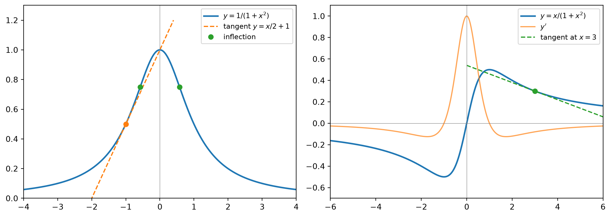

Differentiation Rule: Product rule, Quotient rule
Exponential derivatives, operator viewpoint, and computational shortcuts
1 Derivative of Exponential Functions
1.1 The structure \(f'(x) = f'(0)\,a^x\)
Let \(f(x) = a^x\) with \(a > 0\). From the definition of the derivative,
\[ f'(x) = \lim_{h\to 0}\frac{a^{x+h}-a^x}{h} = a^x \lim_{h\to 0}\frac{a^h - 1}{h} = f'(0)\,a^x . \]
The limit does not depend on \(x\), so the derivative of an exponential function is proportional to the function itself, with proportionality constant \(f'(0)\), the slope at the origin.
1.2 Definition of \(e\)
Among all bases \(a\), the number \(e\) is defined as the unique base whose slope at \(0\) equals \(1\):
\[ \lim_{h\to 0}\frac{e^h - 1}{h} = 1 \qquad\Longrightarrow\qquad \frac{d}{dx}e^x = e^x . \]
Numerically, \(a=2\) gives \(f'(0)\approx 0.69\) and \(a=3\) gives \(f'(0)\approx 1.10\), so \(2 < e < 3\).
1.3 Why \(f'(0) = \ln a\)
The key step is to rewrite any exponential in base \(e\):
\[ a = e^{\ln a} \quad\Longrightarrow\quad a^x = e^{x\ln a}. \]
Every exponential function is a horizontally rescaled copy of \(e^x\).
1.3.1 Proof by direct limit (no chain rule)
For \(a \neq 1\), set \(k = h\ln a\). Since \(\ln a \neq 0\), \(h\to 0 \iff k \to 0\):
\[ f'(0) = \lim_{h\to 0}\frac{e^{h\ln a}-1}{h} = \ln a \cdot \lim_{k\to 0}\frac{e^{k}-1}{k} = \ln a \cdot 1 = \ln a . \]
For \(a = 1\), \(f \equiv 1\) and \(f'(0) = 0 = \ln 1\). Only the defining property of \(e\) is used; the rest is a change of scale on the \(h\)-axis. Compressing \(e^x\) horizontally by a factor \(\ln a\) multiplies every slope by \(\ln a\).
1.3.2 Proof by chain rule
\[ \frac{d}{dx}e^{x\ln a} = e^{x\ln a}\cdot \ln a = (\ln a)\,a^x . \]
Check: \(\ln 2 \approx 0.693\), \(\ln 3 \approx 1.099\), consistent with the numerical estimates.
1.3.3 No circularity
The logical order is one-directional:
\[ e \;(\text{defined by } f'(0)=1) \;\to\; e^x \;\to\; \ln \;(\text{inverse of } e^x) \;\to\; a^x = e^{x\ln a}. \]
2 Product and Quotient Rules
\[ (fg)' = f'g + fg', \qquad \left(\frac{f}{g}\right)' = \frac{f'g - fg'}{g^2}. \]
Special case, the reciprocal rule (numerator constant):
\[ \left(\frac{1}{g}\right)' = -\frac{g'}{g^2}. \]
3 Operator Viewpoint
3.1 The differentiation operator \(D\)
Write \(D = \dfrac{d}{dx}\) as an operator mapping a function to a function: \(D h = h'\). It is linear:
\[ D(f+g) = Df + Dg,\qquad D(cf) = c\,Df . \]
Linearity makes sums of operators meaningful. With \(I\) (written \(1\)) the identity operator,
\[ (D+1)h := Dh + h = h' + h . \]
3.2 Exponential shift
Applying the product rule to \(h e^x\):
\[ D(he^x) = h'e^x + he^x = e^x (D+1)h . \]
Moving \(e^x\) outside \(D\) costs a shift \(D \to D+1\). In general,
\[ D(e^{ax}h) = e^{ax}(D+a)h , \qquad D^n(e^{ax}h) = e^{ax}(D+a)^n h . \]
Condition: this applies only when the entire function has the form \(h\cdot e^{ax}\). If \(e^x\) sits inside a sum, as in \(s + ke^s\) or \(w + ce^w\), differentiate term by term; no extra \(e^x\) factor appears.
Example:
\[ D^2(x^4e^x) = e^x(D+1)^2x^4 = e^x\left(x^4 + 8x^3 + 12x^2\right) = x^2(x+2)(x+6)e^x . \]
3.3 Connection to frequency shift
In the Fourier domain \(D \leftrightarrow j\omega\). Multiplying a signal by \(e^{j\omega_0 t}\) (modulation) shifts the spectrum \(\omega \to \omega - \omega_0\). In the time domain the same fact reads
\[ D\left(e^{j\omega_0 t}h\right) = e^{j\omega_0 t}(D + j\omega_0)h . \]
Multiplying by an exponential translates the differentiation operator. This is the mechanism behind removing the carrier in baseband-equivalent models, seen from the derivative side.
4 Simplify Before Differentiating
The quotient rule is a last resort. Rewriting first usually shortens the work and reduces error.
| Situation | Rewrite | Example |
|---|---|---|
| Monomial denominator | Divide termwise | \(\dfrac{x^4-5x^3+\sqrt{x}}{x^2} = x^2 - 5x + x^{-3/2}\) |
| Equal degrees | Polynomial division | \(\dfrac{x+2}{x-1} = 1 + \dfrac{3}{x-1}\) |
| Same, quadratic | Polynomial division | \(\dfrac{1-u^2}{1+u^2} = -1 + \dfrac{2}{1+u^2}\) |
| Product of powers | Expand | \(\left(y^{-2}-3y^{-4}\right)(y+5y^3) = 5y - 14y^{-1} - 3y^{-3}\) |
| Nested fraction | Clear inner fraction | \(\dfrac{x}{x + c/x} = \dfrac{x^2}{x^2+c} = 1 - \dfrac{c}{x^2+c}\) |
| Higher derivatives of rationals | Partial fractions | \(\dfrac{x}{x^2-1} = \dfrac12\left(\dfrac{1}{x-1}+\dfrac{1}{x+1}\right)\) |
After division, constants vanish under differentiation and only a simple remainder term needs work.
Keep denominators factored. The quotient-rule denominator is always \(g^2\); leave it as \((1+u^2)^2\) rather than \(u^4 + 2u^2 + 1\). Factored form preserves sign, domain, and cancellation information.
5 Useful Formulas
5.1 Linear over linear (Möbius form)
\[ \left(\frac{ax+b}{cx+d}\right)' = \frac{ad-bc}{(cx+d)^2}. \]
The numerator is the determinant of \(\begin{pmatrix}a&b\\c&d\end{pmatrix}\). If \(ad = bc\), the derivative is identically \(0\) and the function is constant.
5.2 Power denominator
\[ \left(\frac{f}{x^n}\right)' = \frac{xf' - nf}{x^{n+1}}. \]
Derivation: \((fx^{-n})' = f'x^{-n} - nfx^{-n-1}\). Example: \(\left(\dfrac{e^x}{x^2}\right)' = \dfrac{(x-2)e^x}{x^3}\).
5.3 Logarithmic-derivative form
Dividing the product and quotient rules by the function itself:
\[ \frac{(fg)'}{fg} = \frac{f'}{f} + \frac{g'}{g}, \qquad \frac{(f/g)'}{f/g} = \frac{f'}{f} - \frac{g'}{g}. \]
Efficient for products of many factors, and for evaluating a derivative at a single point. For \(y = \dfrac{\sqrt{x}}{x+1}\) at \(x=4\):
\[ \frac{y'}{y}\Big|_{x=4} = \frac{1}{2\cdot 4} - \frac{1}{5} = -\frac{3}{40}, \qquad y'(4) = 0.4\cdot\left(-\frac{3}{40}\right) = -\frac{3}{100}. \]
5.4 Leibniz rule
\[ (fg)^{(n)} = \sum_{k=0}^{n}\binom{n}{k}f^{(k)}g^{(n-k)} . \]
The exponential shift \((D+1)^n\) is the special case \(g = e^x\), where every \(g^{(k)} = e^x\). For \(n=2\):
\[ (he^x)'' = e^x\left(h + 2h' + h''\right). \]
5.5 Higher derivatives of simple poles
\[ \left(\frac{1}{x-a}\right)^{(n)} = \frac{(-1)^n\,n!}{(x-a)^{n+1}} . \]
Combined with partial fractions:
\[ f(x) = \frac{x}{x^2-1} \;\Rightarrow\; f''(x) = \frac{1}{(x-1)^3} + \frac{1}{(x+1)^3} = \frac{2x(x^2+3)}{(x^2-1)^3}. \]
Repeated quotient rules make numerators grow rapidly; partial fractions keep each term in closed form.
5.6 Priority order
- Simplify (divide, expand, partial fractions).
- Apply a matching formula above.
- Fall back to the quotient rule.
6 Tangent and Normal Lines
At \((x_0, y_0)\) with slope \(m = f'(x_0)\):
\[ \text{tangent: } y - y_0 = m(x - x_0), \qquad \text{normal: } y - y_0 = -\frac{1}{m}(x - x_0). \]
6.1 \(y = e^x/x\) at \((1, e)\)
\[ y' = \left(\frac1x - \frac1{x^2}\right)e^x = \frac{(x-1)e^x}{x^2},\qquad y'(1) = 0 . \]
The tangent is horizontal, \(y = e\), because \((1,e)\) is a local minimum for \(x>0\). Hence \(e^x/x \ge e\) for \(x > 0\), i.e.
\[ e^x \ge ex , \]
with equality at \(x=1\): the line \(y = ex\) through the origin is tangent to \(e^x\) at \(x=1\).
6.2 Witch of Agnesi: \(y = \dfrac{1}{1+x^2}\)
\[ y' = -\frac{2x}{(1+x^2)^2}, \qquad y'' = \frac{6x^2-2}{(1+x^2)^3}. \]
At \((-1, \tfrac12)\), \(y'(-1) = \tfrac12\), so the tangent is \(y = \tfrac12 x + 1\). The curve is smooth at the top (\(y'(0)=0\)), with inflection points at \(x = \pm\tfrac{1}{\sqrt3}\). Since \(x=-1\) lies in the concave-up region, the tangent lies below the curve.
6.3 Serpentine: \(y = \dfrac{x}{1+x^2}\)
\[ y' = \frac{1-x^2}{(1+x^2)^2}. \]
At \((3, 0.3)\), \(y'(3) = -0.08\), so the tangent is \(y = -0.08x + 0.54\).
- \(y\) is odd, with extrema \(\pm\tfrac12\) at \(x = \pm 1\), and \(y\to 0\) as \(x\to\pm\infty\).
- \(y'\) is even, maximal (\(=1\)) at \(x=0\), minimal (\(=-\tfrac18\)) at \(x = \pm\sqrt3\), and \(y' \sim -1/x^2 \to 0\) at infinity. It is not a parabola.
- The extrema of \(y'\) at \(x=\pm\sqrt3\) are the inflection points of \(y\).
7 Verification Toolkit
Most errors in differentiation come not from the rules but from the algebra before and after them. Each check below takes seconds.
| Check | What it catches | How |
|---|---|---|
| Plug in \(x=0\) | Wrong constant term in a quotient-rule numerator | Compare \(g(0)f'(0) - f(0)g'(0)\) with the simplified numerator at \(0\) |
| Plug in a generic point | A rewrite that changed the function | Evaluate original and rewritten forms at e.g. \(t=4\) (avoid \(0\), \(1\), which can coincide by accident) |
| Asymptotic order | Lost powers, wrong sign | If \(f \sim 1/x\) at infinity, then \(f' \sim -1/x^2\), \(f'' \sim 2/x^3\) |
| Symmetry | Spurious terms | \(f\) odd \(\Rightarrow f'\) even (only even powers survive), and vice versa |
| Monotonicity | Wrong sign of slope | E.g. \(2 - \frac{2}{x+1}\) is increasing, so \(y' > 0\) |
| Difference quotient | Wrong magnitude of slope | \(\frac{f(x_0+1)-f(x_0)}{1}\) should be close to \(f'(x_0)\) |
For sketches: where \(f' = 0\) the graph is smooth and horizontal, never a corner; and always check the behavior as \(x\to\pm\infty\).
8 Common Pitfalls
- Double negatives. When a negative constant multiplies a derivative that itself produces a minus sign, one sign tends to disappear. Factor the constant’s minus out and attach it at the end.
- Over-applying a pattern. \((he^x)' = (h+h')e^x\) requires the whole function to be \(h\cdot e^x\).
- Dropping exponents on evaluation. \(\left(x^{1/2}+x^{-1/2}\right)^{-2}\) at \(x=4\) is \((5/2)^{-2} = 4/25\), not \(5/2\).
- Partial division. Dividing numerator and denominator by \(t\) must divide every term: \(\dfrac{2t}{2+\sqrt t} = \dfrac{2}{2/t + 1/\sqrt t}\).
- Expanding denominators that should stay factored.